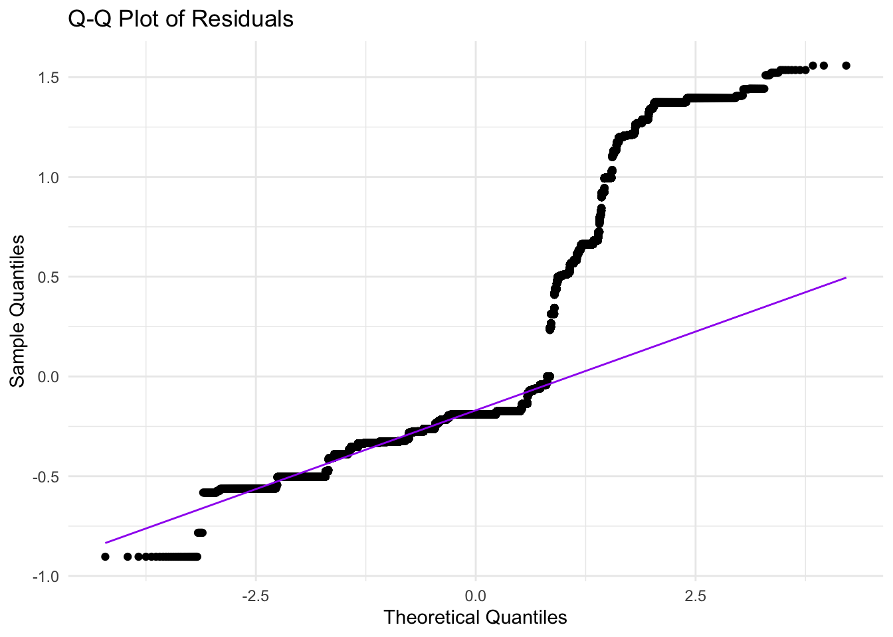

This section explores how restaurant grades have changed over time, with a focus on neighborhoods and cuisine types. Using interactive visualizations, we analyze the trends to uncover patterns in hygiene ratings across Manhattan. We also highlight Italian restaurants as a case study for evaluating trends in a specific cuisine.
data <- read_csv("Manhattan_Restaurant_Inspection_Results.csv") %>%
clean_names()
if (!all(c("grade", "inspection_date") %in% colnames(data))) {
stop("The required columns 'grade' and 'inspection_date' are not found in the dataset.")
}
time_data <- data %>%
filter(!is.na(grade), !is.na(inspection_date)) %>%
mutate(year = as.numeric(format(as.Date(inspection_date, format = "%m/%d/%Y"), "%Y")))
grade_trends_borough <- time_data %>%
group_by(year, boro, grade) %>%
summarise(count = n(), .groups = "drop")
viridis_colors <- viridis(n = length(unique(grade_trends_borough$grade)))
plot_borough <- plot_ly(
grade_trends_borough,
x = ~year,
y = ~count,
color = ~grade,
colors = viridis_colors,
type = "scatter",
mode = "lines+markers",
split = ~grade
) %>%
layout(
title = list(text = "Trends in Manhattan Restaurants Hygiene Grades Over Time"),
xaxis = list(title = "Year"),
yaxis = list(title = "Number of Restaurants"),
legend = list(title = list(text = "Grade"), x = 1.1),
plot_bgcolor = 'rgba(0, 0, 0, 0)',
paper_bgcolor = 'rgba(0, 0, 0, 0)'
)grade_trends_cuisine <- time_data %>%
filter(cuisine_description == "Italian") %>%
group_by(year, cuisine_description, grade) %>%
summarise(count = n(), .groups = "drop")
plot_cuisine <- plot_ly(
grade_trends_cuisine,
x = ~year,
y = ~count,
color = ~grade,
colors = viridis_colors,
type = "scatter",
mode = "lines+markers",
split = ~grade
) %>%
layout(
title = list(text = "Grade Distribution Over Time for Italian Restaurants in Manhattan"),
xaxis = list(title = "Year"),
yaxis = list(title = "Number of Restaurants"),
legend = list(title = list(text = "Grade"), x = 1.1),
plot_bgcolor = 'rgba(0, 0, 0, 0)',
paper_bgcolor = 'rgba(0, 0, 0, 0)'
)
plot_boroughplot_cuisineThe above line chart shows trends in Manhattan restaurant hygiene grades over time, with the x-axis representing years and the y-axis showing the number of restaurants per grade. Grade “A” dominates, showing a sharp increase around 2022, reflecting improved hygiene practices or changes in inspection standards. Grades “B” and “C” also rise slightly post-2020 but remain much lower. Other grades (“N,” “P,” “Z”) are minimally represented. Overall, the data highlights a strong focus on achieving high hygiene standards, with the majority of restaurants attaining grade “A.”
The bottom line chart shows the grade distribution over time for Italian restaurants in Manhattan, which we use as an example to illustrate hygiene trends within a specific cuisine. The x-axis represents years, while the y-axis displays the number of restaurants. Grade “A” experienced a notable rise around 2022, reflecting either improved hygiene practices or changes in inspection standards. Grades “B” and “C” show minor increases but remain less prevalent, while other grades (“N,” “P,” “Z”) are rarely observed. This trend underscores the focus on maintaining high cleanliness standards among Italian restaurants, with most achieving grade “A” in recent years.
To better understand the factors influencing hygiene grades, we build a regression model, includes: - Converting grades (A, B, C) to numerical values. - Categorizing Manhattan into regions (Downtown, Midtown, Uptown, Other) based on zip codes. - Cleaning violation codes for more reliable analysis.
In this analysis, we conducted a univariable ordinal regression to explore the relationship between the restaurant grade (A, B, C) and various predictors, including cuisine type, inspection type, violation code, and location. The grades were converted to numeric values (1 for A, 2 for B, 3 for C) to facilitate ordinal regression modeling. Each predictor was analyzed independently to determine its effect on restaurant grade, using the quasipoisson family to handle the ordinal nature of the dependent variable.
manhattan_data <- read_csv("Manhattan_Restaurant_Inspection_Results.csv", na = c("NA", "", "."))
cleaned_data <- manhattan_data %>%
janitor::clean_names() %>%
filter(
!is.na(dba),
!is.na(cuisine_description),
!is.na(grade),
!is.na(zipcode),
grade %in% c("A", "B", "C")
) %>%
mutate(
grade_numeric = case_when(
grade == "A" ~ 1,
grade == "B" ~ 2,
grade == "C" ~ 3
),
cuisine_description = factor(cuisine_description),
inspection_type = factor(inspection_type),
violation_code = str_trim(as.character(violation_code)),
location = case_when(
zipcode >= 10000 & zipcode <= 10025 ~ "Downtown",
zipcode >= 10026 & zipcode <= 10040 ~ "Midtown",
zipcode >= 10041 & zipcode <= 10282 ~ "Uptown",
TRUE ~ "Other"
)
) %>%
mutate(location = factor(location))
cleaned_data <- cleaned_data %>%
filter(grepl("^[A-Za-z0-9]+$", violation_code))
predictors <- c("cuisine_description", "inspection_type", "violation_code", "location")
univariable_results <- lapply(predictors, function(predictor) {
formula <- as.formula(paste("grade_numeric ~", predictor))
model <- glm(formula, data = cleaned_data, family = quasipoisson)
tidy(model) %>%
mutate(predictor = predictor) %>%
select(predictor, term, estimate, std.error, p.value)
})
results_table <- bind_rows(univariable_results) %>%
filter(term != "(Intercept)")
kable(
head(results_table, 10),
format = "markdown",
col.names = c("Predictor", "Term", "Estimate", "Std. Error", "p-value"),
caption = "Top 10 Univariable Ordinal Regression Results"
)| Predictor | Term | Estimate | Std. Error | p-value |
|---|---|---|---|---|
| cuisine_description | cuisine_descriptionAfrican | 0.7855205 | 0.1393366 | 0.0000000 |
| cuisine_description | cuisine_descriptionAmerican | 0.1848587 | 0.1348718 | 0.1704997 |
| cuisine_description | cuisine_descriptionArmenian | 0.4353181 | 0.1820141 | 0.0167765 |
| cuisine_description | cuisine_descriptionAsian/Asian Fusion | 0.3176720 | 0.1357685 | 0.0192987 |
| cuisine_description | cuisine_descriptionAustralian | 0.3456047 | 0.1407816 | 0.0140967 |
| cuisine_description | cuisine_descriptionBagels/Pretzels | 0.2147958 | 0.1366366 | 0.1159531 |
| cuisine_description | cuisine_descriptionBakery Products/Desserts | 0.2631724 | 0.1353316 | 0.0518243 |
| cuisine_description | cuisine_descriptionBangladeshi | 0.5108256 | 0.1757424 | 0.0036550 |
| cuisine_description | cuisine_descriptionBarbecue | 0.2455706 | 0.1421938 | 0.0841730 |
| cuisine_description | cuisine_descriptionBasque | 0.0000000 | 0.3812387 | 1.0000000 |
The results were summarized for each predictor, showing the estimate, standard error, and p-value. Estimates represent the direction and strength of the association between the predictor and grade, with positive estimates indicating a tendency toward poorer grades (B, C) and negative estimates indicating a tendency toward better grades (A). P-values assess the statistical significance of these associations.
To improve the visualization and interpretation, we showcased only the top 10 results. These results allow users to identify which cuisine types or predictors have the strongest association with restaurant hygiene grades. For example, cuisines such as African and Asian/Asian Fusion showed statistically significant positive associations with grade trends, indicating a noteworthy relationship worth further exploration. This focused approach highlights key insights while maintaining a clean and reader-friendly interface on the website.
model_example <- glm(grade_numeric ~ cuisine_description, data = cleaned_data, family = quasipoisson)
residuals_data <- augment(model_example)
ggplot(residuals_data, aes(sample = .resid)) +
stat_qq() +
stat_qq_line(color = "purple") +
labs(
title = "Q-Q Plot of Residuals",
x = "Theoretical Quantiles",
y = "Sample Quantiles"
) +
theme_minimal()
We conducted a residual diagnostic analysis on a generalized linear
model (GLM) using the glm() function with a quasipoisson
family to account for overdispersion in the data. The model predicts
numeric hygiene grades (grade_numeric, where A=1, B=2, C=3)
using cuisine_description as the predictor. Residuals from
the model were extracted with the augment() function for
further analysis. A Q-Q plot was then created to assess the normality of
the residuals.
In the plot, most data points align closely with the purple reference line, indicating that the residuals generally follow a normal distribution. However, deviations at the tails suggest potential issues, such as outliers or non-normality for extreme values. These results highlight that while the model performs well for the majority of the data, further adjustments may be needed to address discrepancies at the extremes and improve overall fit.
Go Home